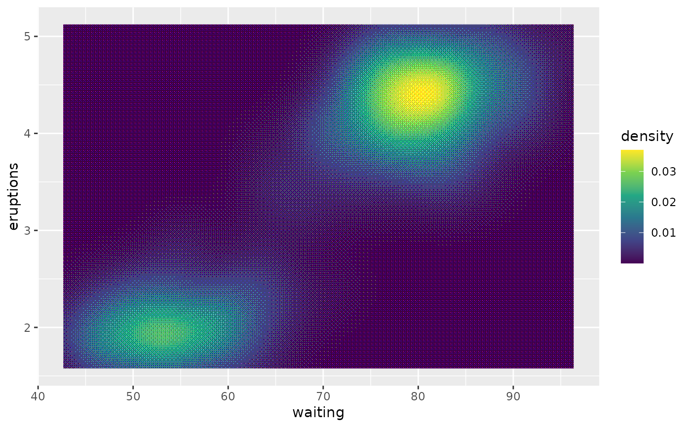
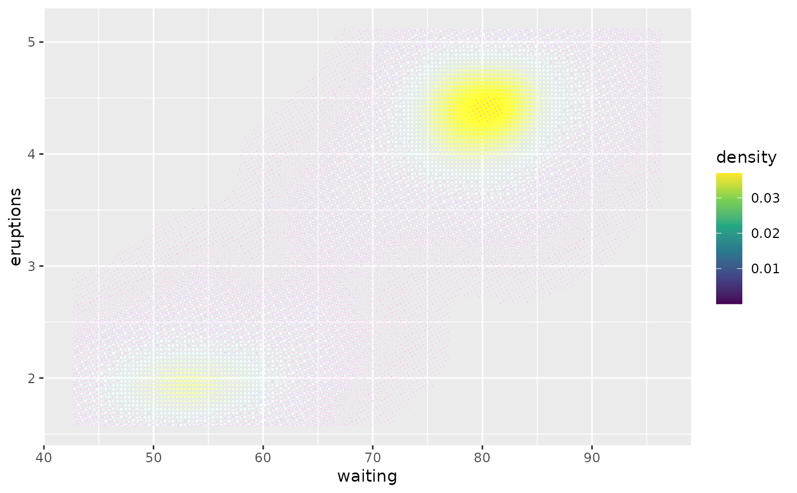

Dither image using a threshold dithering map
Source:R/circle_dither.R, R/custom_dither.R, R/halftone_dither.R, and 1 more
with_ordered_dither.RdThese filters reduces the number of colours in your layer and uses various threshold maps along with a dithering algorithm to disperse colour error.
with_circle_dither( x, map_size = 7, levels = NULL, black = TRUE, colourspace = "sRGB", offset = NULL, ... ) with_custom_dither( x, map = "checks", levels = NULL, colourspace = "sRGB", offset = NULL, ... ) with_halftone_dither( x, map_size = 8, levels = NULL, angled = TRUE, colourspace = "sRGB", offset = NULL, ... ) with_ordered_dither(x, map_size = 8, levels = NULL, colourspace = "sRGB", ...)
Arguments
| x | A ggplot2 layer object, a ggplot, a grob, or a character string naming a filter |
|---|---|
| map_size | One of 2, 3, 4, or 8. Sets the threshold map used for dithering. The larger, the better approximation of the input colours |
| levels | The number of threshold levels in each channel. Either a single integer to set the same number of levels in each channel, or 3 values to set the levels individually for each colour channel |
| black | Should the map consist of dark circles expanding into the light, or the reverse |
| colourspace | In which colourspace should the dithering be calculated |
| offset | The angle offset between the colour channels |
| ... | Arguments to be passed on to methods. See the documentation of supported object for a description of object specific arguments. |
| map | The name of the threshold map to use as understood by
|
| angled | Should the halftone pattern be at an angle or orthogonal |
Value
A modified Layer object
See also
Other dithering filters:
with_dither()
Examples
library(ggplot2) # Ordered dither ggplot(faithfuld, aes(waiting, eruptions)) + with_ordered_dither( geom_raster(aes(fill = density), interpolate = TRUE) ) + scale_fill_continuous(type = 'viridis')# Halftone dither ggplot(faithfuld, aes(waiting, eruptions)) + with_halftone_dither( geom_raster(aes(fill = density), interpolate = TRUE) ) + scale_fill_continuous(type = 'viridis')# Circle dither with offset ggplot(faithfuld, aes(waiting, eruptions)) + with_circle_dither( geom_raster(aes(fill = density), interpolate = TRUE), offset = 15 ) + scale_fill_continuous(type = 'viridis')